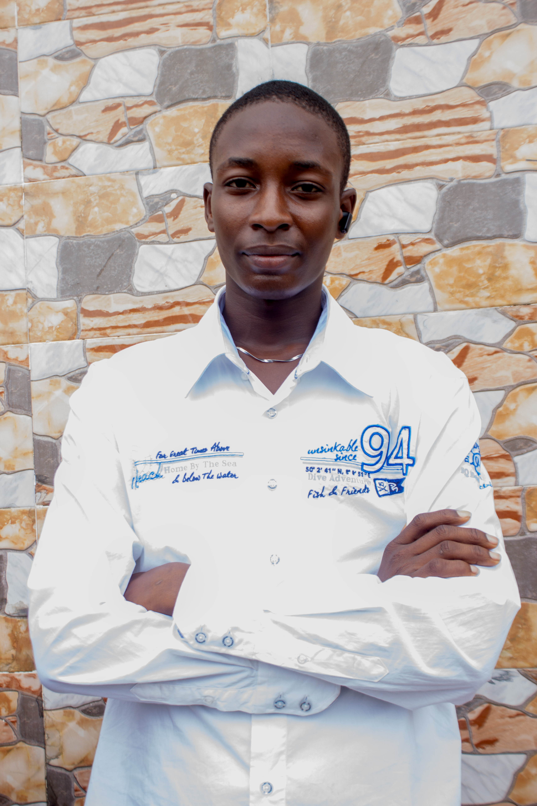

Ifeoluwa Olalekan | WDD 130
Hey there! I’m Ifeoluwa, a passionate student and website developer from Nigeria. I love turning creative ideas into functional, beautiful web pages. When I’m not coding or learning something new online, I’m usually vibing to hip-hop or enjoying a solid plate of rice, my ultimate comfort food.